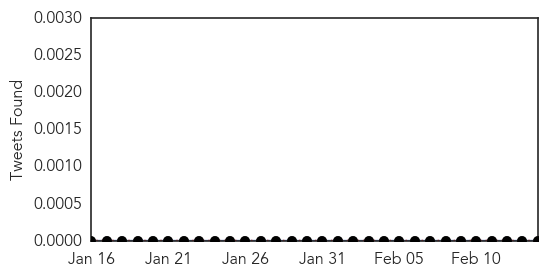
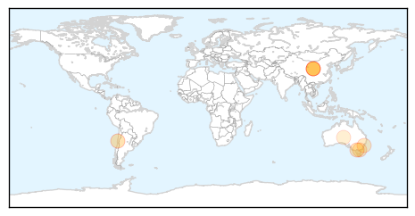
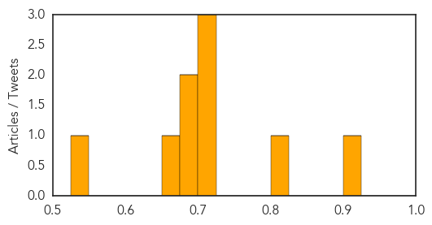
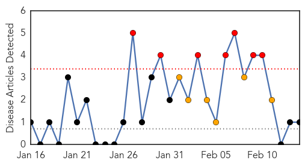

Hepatitis
30-Day Web Trend
4 alerts, 0 warnings
30-Day Twitter Trend
0 alerts, 0 warnings

Article Locations
Article Confidences
Top Articles:
- 0.902
- Frozen berries linked to Hep A
- 0.809
- Nanna's frozen berries recalled over Hepatitis A link
- 0.723
- Australia: Nanna’s berries may be contaminated with hepatitis A
- 0.703
- Second Hepatitis A case linked to Nanna's frozen berries confirmed in NSW
- 0.702
- Second case of hepatitis A linked to Nanna's frozen berries in NSW
- 0.696
- Second case of hepatitis A linked to Nanna's frozen berries in NSW
- 0.677
- More frozen berries recalled in Australia after hepatitis A contamination scare
- 0.665
- Nannas berries in national recall after Hep A link
- 0.534
- More frozen berries recalled over hep A
Top Tweets:
-
No tweets found for Feb 14, 2015
Pertussis
30-Day Web Trend
7 alerts, 6 warnings

30-Day Twitter Trend
0 alerts, 0 warnings

Article Locations

Article Confidences

Top Articles:
Top Tweets:
-
No tweets found for Feb 14, 2015